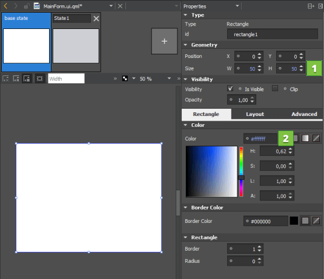
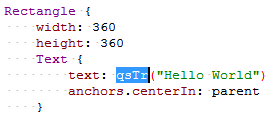

Specifying Item Properties
The Properties pane displays all the properties of the selected item. The properties are grouped by type. The top part of the pane displays properties that are common to all QML types, such as position, size, and visibility.
The bottom part of the pane displays properties that are specific to each QML type. For example, the following image displays the properties you can set for Rectangle (1) and Text (2) items.

To change the item type, double-click the Type field in the Properties pane, and enter the name of another QML type in the field. If you have specified properties for the item that are not supported for the new type, the type cannot be changed and an error message is displayed. Select the Settings menu next to the property name, and then select Reset to remove the property values before trying again.
To return an item to its implicit position after moving it, select the (Reset Position) button on the toolbar. To return it to its implicit size, select  (Reset Size) button.
(Reset Size) button.
To set the visibility of the item, select Edit > Visibility in the context menu.
To specify the color of the selected item in the Select Color dialog, select Edit Color in the context menu.
For more information on the properties available for an item, press F1.
Viewing Changes in Properties
The default values of properties are displayed in white color, while the values that you specify explicitly are highlighted with blue color. In addition, property changes in states are highlighted with blue.
This allows you to easily see which values are set in the UI form or QML file and which values are default characteristics of a QML type or a component.
When editing states, you can easily see which values are explicitly set in the current state and which values are derived from the base state.
The following images illustrate this. In the base state, the Size (1) and Colors (2) values are explicitly set and highlighted.

In State1, only the color (1) is explicitly set and highlighted.

Resetting a property sets it back to the default value and removes the value from the UI form or QML file.
Note: As a result, all boolean values can be visualized in four different ways.
For example, visibility can be visualized as follows:
| TRUE | The QML type is visible by default. The visibility might be overridden by the visibility set in the base state. | |
| TRUE (highlighted) | The QML type is explicitly set to visible. | |
| FALSE | The QML type is hidden by default. The visibility might be overridden by the visibility set in the base state. |
| FALSE (hightlighted) | The type is explicitly set to hidden. |

Marking Text Items for Translation
To support translators, mark each text item that should be translated. In the Properties pane, Text field, select tr (1).

By default, the text string is enclosed in a qsTr() call.

If you use text IDs instead of plain text, change the default call to qsTrId(). Select Tools > Options > Qt Quick > Qt Quick Designer, and then select the qsTrId() radio button in the Internationalization group. For more information about text ID based translations, see Qt Linguist Manual: Text ID Based Translations.
To preserve the context when editing the text or to change the context by setting a binding on the text property, change the default call to qsTranslate() by selecting the qsTranslate() radio button.
For more information, see Internationalization and Localization with Qt Quick.
Loading Placeholder Data
The Design mode supports views, models, and delegates, so that when you add a Grid View, List View, or Path View item, the ListModel and the delegate item are added automatically.
However, the missing context of the application presents a challenge. Specific models defined in C++ are the most obvious case. Often, the context is missing simple properties, which are either defined in C++, or in other QML files. A typical example is an item that uses the properties of its parent, such as parent.width.
Using Dummy Models
If you open a file in the Design mode that references a C++ model, you see nothing on the canvas. If the data in the model is fetched from the internet, you have no control over it. To get reliable data, dummy data was introduced.
For example, the following code snippet describes the file example.qml that contains a ListView that in turn specifies a C++ model:
ListView { model: dataModel delegate: ContactDelegate { name: name } }
Create a directory named dummydata in the root directory of the project, so that it is not deployed to the device. In the dummydata directory, create a QML file that has the same name as the value of model:
qml/exampleapp/example.qml dummydata/dataModel.qml
Then create the dataModel.qml file that contains the dummy data:
import QtQuick 2.0 ListModel { ListElement { name: "Ariane" } ListElement { name: "Bella" } ListElement { name: "Corinna" } }
Creating Dummy Context
The following example presents a common pattern in QML:
Item { width: parent.width height: parent.height }
This works nicely for applications but the Design mode displays a zero-sized item. A parent for the opened file does not exist, because the context is missing. To get around the missing context, the idea of a dummy context is introduced. If you place a file with the same name as the application (here, example.qml) in the dummydata/context directory, you can fake a parent context:
import QtQuick 2.0 import QmlDesigner 1.0 DummyContextObject { parent: Item { width: 640 height: 300 } }
Building Transformations on Items
The Advanced pane allows you to configure advanced transformations, such as rotation, scale, and translation. You can assign any number of transformations to an item. Each transformation is applied in order, one at a time.
For more information on Transform types, see Transform.
Editing Properties Inline
You can double-click objects on the canvas to edit their text, color, or source properties inline. Because you can specify several of these properties for some QML types, such as Text Edit, you can also right-click objects to open the inline editors from a context-menu.